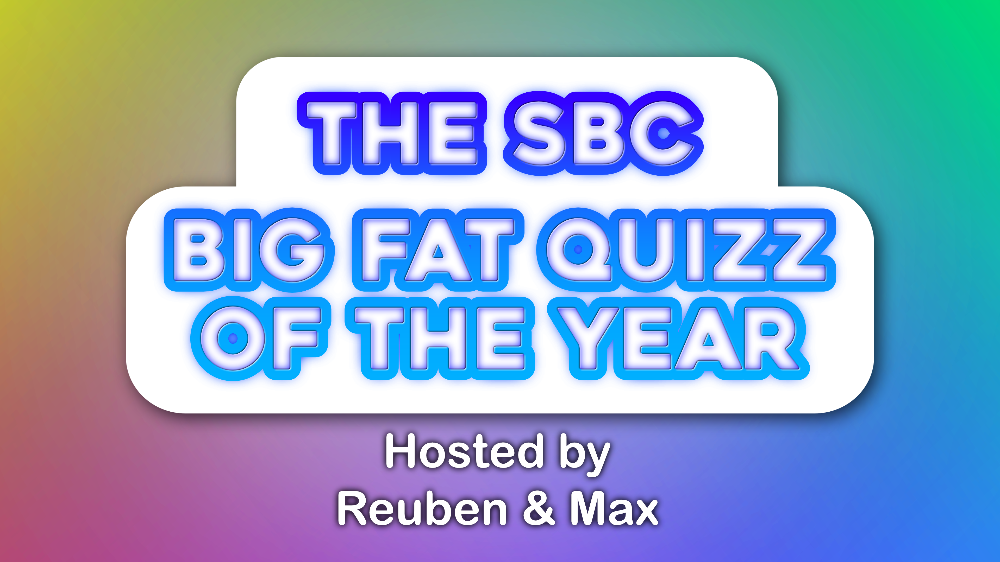

First we start of with a recap of the year, going over subject of pop culture relevancy without leaning too political. We will also talk about topics that we think the youth will be familiar with or have heard of.
Some notable moments from this year include:
The lamb that got caught in a police drugs bust In Scotland, police found a lamb called Pablo eating chips in the back of a car during a drugs investigation. The lamb was eventually returned safely to its farm. Quiz question: What was the lamb called?
A mayor chosen by a coin toss
In a Peruvian village, two candidates received exactly the same number of votes. Rather than endless recounts, they decided the winner with a coin toss! Quiz question: How was the tied election decided?
I wouldn't have a full political round, but a few of these would be brilliant. - Donald Trump declaring his redecorated Oval Office a historic landmark. - Trump calling Norway a rather rude name, only for Norway's tourism board to respond by advertising its beautiful public toilets! - A giant effigy of FIFA president Gianni Infantino appearing in the news in November.
Possible question: Which country responded to Trump's insult about its toilets by turning it into a tourism advert? Answer: Norway.
some other rounds we could do, include:
Guess the Headline (Show a bizarre headline and give four possible endings)
Who am I ? (name the photo of the celebrity)
google searches (Guess the most searched people or topics)
finish the lyrics (play a snippet of a song and ask the contestants to finish the lyrics)